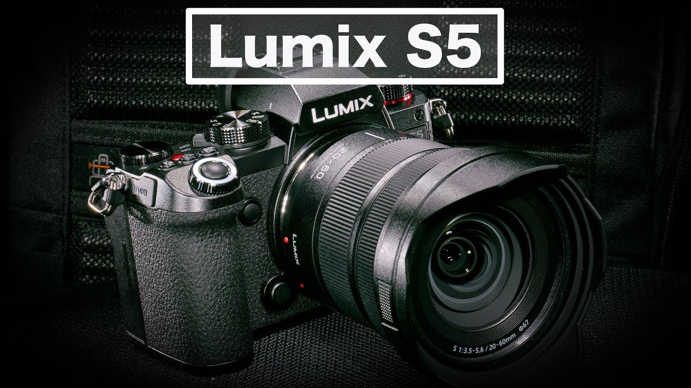

We are an Ohio based programming firm at the cutting edge of development and technology
Here at Air0Tek we use many advanced tools such as the Raised3-D Pro2 Plus printer. "The Pro2 Series has a metal build plate for even heat distribution, along with a full metal frame for smooth movement and precise positioning, and is compatible with a variety of 3D printing materials. The Pro2 Series is complete with precaution measures to save work, a 7-inch touch screen for efficient monitoring of the 3D printing process, and a HEPA air filter. As with all 3D printers from Raise3D, the Pro2 Series can pair with: ideaMaker, a 3D slicer software, ideaMaker Library, a platform for sharing 3D printer files with those in the Raise3D community, and RaiseCloud, a cloud-based 3D printing management platform."
-Raised3D

Innovation that Excites